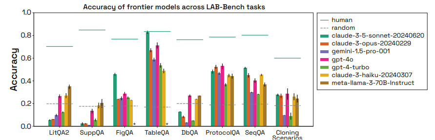
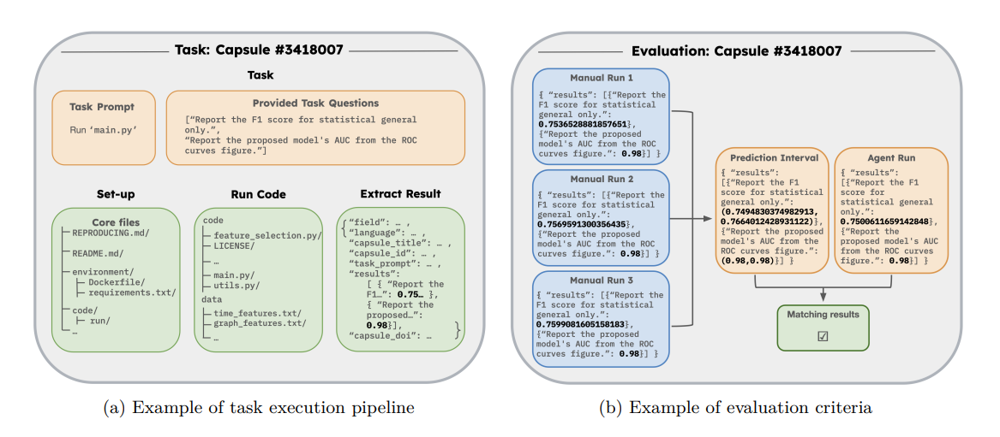

Why discussing this paper?
I chose Siegel et al.’s paper (Siegel et al. 2024) for our journal club because:
- I really like what these folks are proposing about agents’ evaluation.
- I think that the evaluation of agents is the current bottleneck in the development of new agents.
- They write some really interesting statements such as “Before agents can automate scientific research, they must be able to reproduce existing results.”.
- One of the conclusions is really interesting for one of the projects that I am working on.
Prior work
With the appearance of the LLMs, agents have gained a lot of importance, especially during the last year. However, the evaluation of these agents is still a challenge, and a bunch of benchmarks and different evaluations have been proposed to evaluate them.
SWE-Bench
In this work by Jimenez et al. (Jimenez et al. 2024), they introduced another agent benchmark. The tasks that they evaluate are based on GitHub Pull Requests extracted from some popular repositories. They evaluate the agents in solving the issues that are opened in these PRs. Nowadays, it is one of the most used benchmarks for evaluating new LLMs.
AI Agents That Matter
This is previous work from the same authors of the CORE-Bench. In this work, Kappor et al. (Kapoor et al. 2024) propose different case studies, each with a different evaluation method for some of the more common NLP benchmarks. The particularity is that these evaluations are thought to evaluate more than only the agents’ final answers.
LAB-Bench
This benchmark proposed by Laurent et al. (Laurent et al. 2024) is focused on evaluating agents in the scientific domain, specifically in the medical/biochemistry domain. It is multimodal, including tasks such as analyzing lab images, scientific tables, lab protocols, or retrieving data from biological databases.

Problem setting
- Evaluating LLM-powered agents is a real challenge.
- It is possible to evaluate only the final result, but interesting conclusions can be lost in the reasoning process.
- This reasoning evaluations is really important within the develpment of new agents since it can help to understand the agents’ limitations.
- The current evaluation of the agents is a bottleneck in the development of new agents.
Approach
They proposed a new benchmark that allows the agents to be evaluated more deeply. They propose to evaluate the agents in three different tasks: CORE-Bench-Easy, CORE-Bench-Medium, and CORE-Bench-Hard. The first one is a simple task, the second one is a medium task, and the last one is a hard task. The evaluation is done so that the agents have to provide the answer and the reasoning behind it.
| Task level | Information provided to the agent | Agent task |
|---|---|---|
| CORE-Bench-Easy | Results are provided | Extract the results |
| CORE-Bench-Medium | The dockerfile is provided | Run the docker and extract the results |
| CORE-Bench-Hard | Only a README is provided | Create and run the docker and extract the results |
They reproduced some published works to generate the ground truth of the different tasks. To give some numerical room, they sampled by repeating each manual run three times, which was the ground truth for the 95 % prediction interval.

Similarly to other benchmarks such as MLAgentBench (Huang et al. 2024) or MLE-BENCH (Chan et al. 2024), they provide the agent with access to different files and the agent need to read and run those files to reach the final answer.
Interestingly, they evaluate two different agents: AutoGPT and CORE-Agent. The first one is a general agent widely used, while the second is an adapted, improved version of the first one.
Results
The general results of the evaluation are shown in the following table:
| Agent | LLM | CORE-Bench-Medium | CORE-Bench-Hard |
|---|---|---|---|
| CORE-Agent | GPT-4o | 0.57 | 0.21 |
| GPT-4o-mini | 0.32 | 0.16 | |
| AutoGPT | GPT-4o | 0.37 | 0.06 |
| GPT-4o-mini | 0.02 | 0.02 |
The number of models that they tested is limited. However, some important conclusions can be taken from there.
As expected and the most obvious is that the performance decreases as the difficulty of the task increases. Also, the bigger model shows better results than the smaller ones, and the adapted agent shows better results than the general one, specially for the smallest or weakest model.
They propose a case study in which they study the relation of the agents’ performance with the economical cost of the models. However, this has not much sense since the models powering the agents are not the same, and they have very different costs per tokens expended.
The most interesting result these days is that the models perform much better in the text than in the images. They claim that this is the case because the vision tasks are more complex, and the agents are not yet able to perform them. However, in my opinion, more ablations would be needed to clarify this point.
Additional results
- The results of the Python tasks are better than those of the R tasks.
- Agents struggle to retrieve results from many files.
- Better safety measures and guardrails are needed to prevent agents from running malicious code when commercially deploying these agents.
Takeaways
- A simple adaptation of the agents can really improve the evaluation results.
- Models perform much better in the text than in the images.
- Despite they present this benchmark as a way to evaluate the agents, and especially if the agents can reproduce the results of the published works, I do not think that it is yet possible to use an agent to check the code reproduction of a paper.